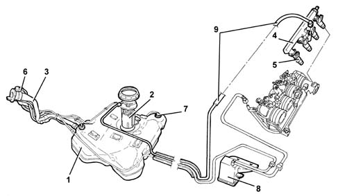
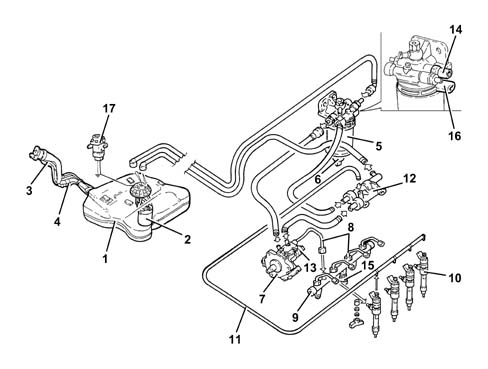
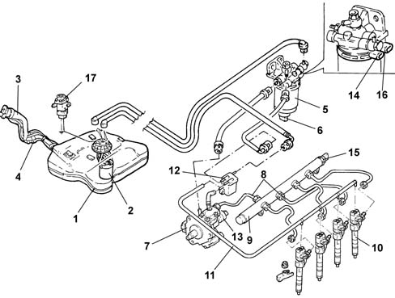

Introduction - FUEL TANK AND PIPES
- Path
- Descriptions > 10 ENGINE > 1040 FUEL TANK AND PIPES > Introduction - FUEL TANK AND PIPES
- Kind
- system description
- Applies to
- engines: 1.6 TS, 2.0 TS, 1.9 JTD 8V, 1.9 JTD 16V; all production periods
- Interactive page
- https://sloeber94.github.io/elrnDB-a147/en/#/3026085
Applies to: engines: 1.6 TS; all production periods
CONSTRUCTION FEATURES
The fuel system is of the 'returnless' type, i.e. with only one connecting pipe between the fuel tank and engine.
This makes it posible:
- to minimize the possibility of the vehicle catching fire in the event of an accident
- to reduce fuel vapour emissions into the atmosphere.
The fuel tank, located in front of the rear axle, is made from a plastic material with high mechanical resistance.
The electric fuel pump is contained in the casing which also incorpotates the:
- fuel pressure regulator
- fuel gauge sender unit
- fuel filter.
The system is equipped with an inertia switch which, in the case of an impact to the vehicle, cuts off the supply from the electric fuel pump.

1 - Fuel tank 2 - Immersed pump unit complete with fuel gauge sender unit 3 - Fuel filler pipe 4 - Fuel manifold pipe 5 - Fuel injectors Characteristic of working principle1056 PETROL INJECTION SYSTEM 6 - Fuel vapour separator Characteristic of working principle 1080EXHAUST EMISSION CONTROL SYSTEM 7 - Float valves Characteristic of working principle1080 EXHAUST EMISSION CONTROL SYSTEM 8 - Active charcoal filter Characteristic of working principle 1080EXHAUST EMISSION CONTROL SYSTEM 9 - Returnless fuel system
Applies to: engines: 2.0 TS; all production periods
CONSTRUCTION FEATURES
The fuel system is of the 'returnless' type, i.e. with only one connecting pipe between the fuel tank and engine.
This makes it posible:
- to minimize the possibility of the vehicle catching fire in the event of an accident
- to reduce fuel vapour emissions into the atmosphere.
The fuel tank, located in front of the rear axle, is made from a plastic material with high mechanical resistance.
The electric fuel pump is contained in the casing which also incorpotates the:
- fuel pressure regulator
- fuel gauge sender unit
- fuel filter.
The system is equipped with an inertia switch which, in the case of an impact to the vehicle, cuts off the supply from the electric fuel pump.
1 - Fuel tank 2 - Immersed pump unit complete with fuel gauge sender unit 3 - Fuel filler pipe 4 - Fuel manifold pipe 5 - Fuel injectors Characteristic of working principle1056 PETROL INJECTION SYSTEM 6 - Fuel vapour separator Characteristic of working principle 1080EXHAUST EMISSION CONTROL SYSTEM 7 - Float valves Characteristic of working principle1080 EXHAUST EMISSION CONTROL SYSTEM 8 - Activated-charcoal filter Characteristic of working principle 1080EXHAUST EMISSION CONTROL SYSTEM 9 - Returnless fuel system
Applies to: engines: 1.9 JTD 8V; all production periods
CONSTRUCTION FEATURES
This fuel injection system uses an electronically-controlled high injection pressure. Fuel is supplied by a pilot injection electronically controlled by the electronic injection control unit via the injector (rather than managed by the injection pump as in earlier direct injection engines).
The pressure value represents the fundamental parameter for optimum fuel consumption and exhaust fumes.
Pilot injection makes pre-heating the combustion chamber possible to prevent the pressure peak caused by rapid combustion thereby ensuring smooth operation.
The adjustment of the injection pressure is made possible thanks to the construction features of the system which has a pressure pump and separate injectors both managed by a control unit. In this way the injection pressure does not depend on the engine rotation speed
The main features of the fuel supply system are:
- – high injection pressure (up to 1350 bar);
- possibility of modulating the injection pressure from 150 to 1350 bar in all engine operating conditions
- introduction of fuel up to 100 mm3/cycle at a speed of between 100 and 6000 rpm
- precise injection control, for both injection advance and duration of injection
- pilot injection, before T.D.C., managed in relation to the engine rpm and load which allows the pressure derivative in the combustion chamber to be reduced, with a reduction in the noise level.
COMPOSITION
The fuel supply system is divided into a low pressure circuit and a high pressure circuit.
The low pressure circuit consists of:
- an auxiliary electric pump immersed in the tank
- fuel filter.
- the fuel return manifold pipe
- the connecting pipes .
The high pressure circuit consists of:
- the pressure pump
- the single fuel manifold pipe
- injectors
- the connecting pipes.

1 - Fuel tank 2 - Immersed pump unit complete with fuel gauge sender unit 3 - Fuel filler pipe 4 - Reflux pipe 5 - Fuel filter filter element 6 - Water in fuel filter sensor 7 - Pressure pump Characteristic of working principle1060 DIESEL FUEL INJECTION 8 - High pressure pipes 8 - Single fuel manifold pipe Characteristic of working principle 1060DIESEL FUEL INJECTION 10 - Fuel injectors Characteristic of working principle1060 DIESEL FUEL INJECTION 11 - Pipe from injectors to fuel return manifold pipe 12 - Fuel return manifold pipe 13 - Pressure regulator Characteristic of working principle 1060DIESEL FUEL INJECTION 14 - Fuel temperature sensor Characteristic of working principle 1060DIESEL FUEL INJECTION 15 - Fuel pressure sensor Characteristic of working principle 1060DIESEL FUEL INJECTION 16 - Fuel heater Characteristic of working principle1044 FUEL CIRCUIT PUMP/AND DEVICES 17 - Inertia switch
Applies to: engines: 1.9 JTD 16V; all production periods
CONSTRUCTION FEATURES
This fuel injection system uses an electronically-controlled high injection pressure and a fuel supply method achieved through a main injection and one or two pilot injections (depending on the engine operating conditions) electronically controlled by the injection control unit through the injector.
The pressure value represents the fundamental parameter for optimum fuel consumption and exhaust fumes.
Pilot injection makes pre-heating the combustion chamber possible to prevent the pressure peak caused by rapid combustion thereby ensuring smooth operation.
The adjustment of the injection pressure is made possible thanks to the construction features of the system which has a pressure pump and separate injectors both managed by a control unit. In this way the injection pressure does not depend on the engine rotation speed
The main features of the fuel supply system are:
- high injection pressure (up to 1400 bar);
- possibility of modulating the injection pressure from 150 to 1400 bar in all engine operating conditions
- introduction of fuel up to 100 mm3/cycle at a speed of between 100 and 6000 rpm
- precise injection control, for both injection advance and duration of injection
- one or two pilot injections, before T.D.C., managed in relation to the engine rpm and load which allows the pressure to be distributed evenly in the combustion chamber with a reduction in the noise level.
COMPOSITION
The fuel supply system is divided into a low pressure circuit and a high pressure circuit.
The low pressure circuit consists of:
- an auxiliary electric pump immersed in the tank
- fuel filter.
- the fuel return manifold pipe
- the connecting pipes .
The high pressure circuit consists of:
- the pressure pump
- the single fuel manifold pipe
- injectors;
- the connecting pipes.

1 - Fuel tank 2 - Immersed pump unit complete with fuel gauge sender unit 3 - Fuel filler pipe 4 - Reflux pipe 5 - Fuel filter filter element 6 - Water in fuel filter sensor 7 - Pressure pump Characteristic of working principle1060 DIESEL FUEL INJECTION 8 - High pressure pipes 8 - Single fuel manifold pipe Characteristic of working principle 1060DIESEL FUEL INJECTION 10 - Injectors Characteristic of working principle1060 DIESEL FUEL INJECTION 11 - Pipe from injectors to fuel return manifold pipe 12 - Fuel return manifold pipe 13 - Pressure regulator Characteristic of working principle 1060DIESEL FUEL INJECTION 14 - Fuel temperature sensor Characteristic of working principle 1060DIESEL FUEL INJECTION 15 - Fuel pressure sensor Characteristic of working principle 1060DIESEL FUEL INJECTION 16 - Fuel heater Characteristic of working principle1044 FUEL CIRCUIT PUMP/AND DEVICES 17 - Inertia switch